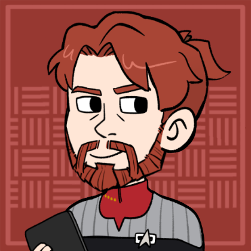
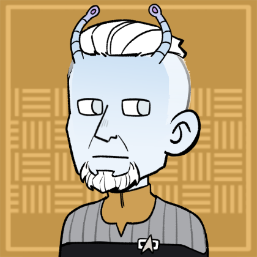
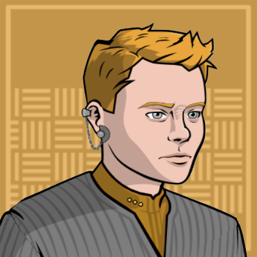
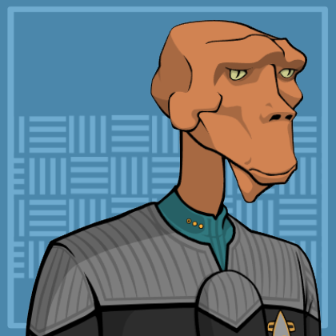
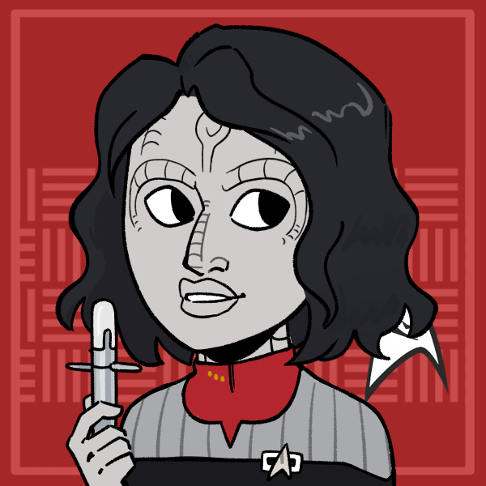
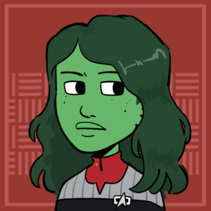
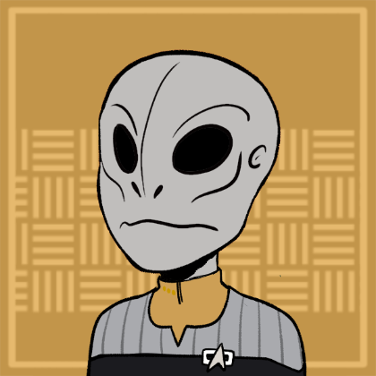

USS Hudson-B
Location:: The Shackleton Expanse
Portrait::
Note:: The NCC-7832-B: A exploration and diplomatic exchange ship set to explore the Shackleton Expanse.
Description
A Federation Galaxy Class starship commanded by Edward Scriba.
Traits
- Federation Starship
- Galaxy Class
- Survivor of Dominion War
Mission
The USS Hudson-B has been assigned to explore the Shackleton Expanse on the far side of the Klingon and Romulan empires. The Galaxy Class starship has been refit for service as an exploratory vessel after previously serving in the Dominion war. During the refit of the Hudson-B, the previously assumed lost USS Hudson-A reemerged from the Shackleton. Many members of the USS Hudson-A have been reassigned to the Hudson-B. The USS Hudson will be based out of Narendra Station, a deep space research station jointly run by Starfleet and the Klingon Empire.
Mission Logs
- Hudson Log 16.2 - Prisoner:
Stardate 56168, Session: 1
The Hudson scared off the attack Vinshari pirates, and took aboard 1 surviving prisoner named MianNo-Ar. The Hudson learned about MianNo-Ar's bio-electric warp technology, a little bit of his people's political structure, and repaired his ship. They sent MianNo-Ar home on the repaired ship with a message of peace.The Hudson, the Klingon Mupwl' and their convoy of colonization ships had been ambushed by pirates calling themselves Vinshari. They used harpoons to to try and grab a convoy freighter, but the Hudson cut the lines using it's phasers.
The Hudson scared away the two remaining Vinshari ships. They used some kind of unknown warp technology that did not show up on Federation sensors. Seemingly, it used the washboard in the Shackleton Expanse to efficiently shape subspace bubbles.
In the wreckage of the battle, the Hudson found a damaged Vinshari fighter with a single pilot. The shuttle was beamed into a shuttle bay, and the pilot into the brig.
Ozym interrogated the prisoner, named MianNo-Ar, who said they were looking to reclaim energy, and that it is their right. He said something about hunting rights and that there must be a great number of Ha'kiv on board Hudson to produce such a large energy signature.
The bridge crew of the Hudson later met in the briefing room, and made a plan for what to do with the prisoner. Delisle followed up on other leads they knew of from the Vinshari, specifically translating some of the messages from the crystalline ship 100 years ago. Some progress was made in modelling the internal crystal structure that might process the language.
Ozym recovered intel from the Vinshari ship computers and revealed a solar system deeper in the expanse with 3 suns and 11 planets, seemingly a hot spot for Vinshari traffic. It also showed a complex chain of command with a high level of independence for each star ship. MianNo-Ar owned his own starship for example.
Fitz and T'Lor worked on repairing the Vinshari ship so that the pilot could go home. This was done by finding a bio-electric blood substance in the ship's power cell. Most of the cells were dead, but T'Lor was able to rejuvenate them.
Finally, Captain Scriba spoke to the pilot and asked him to bring a message of peace back to his people. Delisle also managed to ask for a blood sample for study purposes, suspecting Tilikaal influence on the Vinshari people. MianNo-Ar was able to confirm that his home planet had black obelisks on it, at least.
MianNo-Ar agreed to carry the message of peace, and was sent back home safely. - Hudson Log 11.1 - Crystal Clear:
Stardate 56030, Session: 14
The Hudson encountered a strange crystalline starship, and attempted to remove a torpedo from it, but ended up causes more damage. When they returned to Narendra Station, they found over 100 years had passed during their time at the black hole. Several members decide to either leave Starfleet or transfer to new positions. They rest of the long lost crew of the Hudson would continue their adventures in the Shackleton Expanse. After Abyss Station was destroyed by a new singularity, the USS Hudson left the Omega Draconis system towards Narendra station. The Hudson held a vigil for the lost members of the crew, Verid and Sukav. On the way back to Narendra Station, they found the stars and systems around them had moved much further in time than anticipated, about 110 years.
On the way back, the Hudson encountered a strange crystalline ship attempting to communicate through light. An away team with Robert Lodge, Jolepo, Tizia, and Nisha beamed aboard the starship. They found a crystalline species, who led them to a unidentified torpedo embedded into the crystal walls of the ship.
The torpedo was still active, and the attempts to remove it went awry. Jolepo and Tizia evacuated out into space through a hole in the hull, while Robert and Nisha took cover behind a door. A large section of the starship shattered like glass, and it fled soon afterwards.
The Hudson continued to Narendra station, where they found that much had changed. The alliance between the Federation had strengthened, but not without some strife. General Kargan was still in command of the station, now approaching almost 200 years old. He had limited and controlled exploration of the Shackleton Expanse over the last 100 years, fearing the fate of his old counterpart, Banna Stoker. Now, a new Admiral joined Kargan from the Federation: Admiral April Hebert.
After welcoming the crew of the Hudson back to Narendra Station, April invited them to take some time off to find their new place in the world. Robert Lodge would go on to become a historian, looking into the events of the past 100 years. And Astrid Alder would take some time off to consider new options in Starfleet. In the meantime, Narendra Station would provide an interim commanding officer and supplementary crew along with a Galaxy Class starship named in the Hudson's honor. - Hudson Log 12 - Pasqual's Progress:
Stardate 56052, Session: 15
Captain Edward Scriba took several members of the new USS Hudson-B on a short survey mission aboard the Hudson's yacht. They visited Pasqual-1, and found the society there advancing rapidly though technological ages on their own. The people of Pasqual had embark on a century long project to go to space. An away team found a single neutronium obelisk left on the planet, which seemed to have some sort of influence on the people there. Captain Edward Scriba took several members of the USS Hudson on a survey mission aboard the captain's yacht, the USS Portland. They planned to visit Pasqual-1 on a routine survey mission, and follow that up with a visit to the Lilifas system.
They found that the Pasqual-1 population had been speed-running their technological advancement. In just 110 years, they've reached the equivalent of earth's information age (already a time known for accelerated advances in technology.) After Jolepo expressed interest in visiting the planet, Captain Scriba agreed. Scriba, Jolepo, Jaro, and Delisle all went down, leaving Nisha and Tizia on the yacht.
On the planet, the away team found a society with a singular focus: get into space. The people there had correctly deduced that the monoliths Starfleet removed we taken from them, and their entire culture had been driven to reach out to know what else was out there.
The away team decided to find something like a library, and got directions to something the people there called repository. People there seemed to expect the away team to speak openly and constantly about what new projects and research they were working on. At the repository, the away team sought out information on the black neutronium monoliths that were removed from the planet over the last 100 years. What they found was a history of people quicky devising that someone from off world must have taken the obelisks, and that space-travel must be possible.
In the repository, a weekly ideas-sharing session was held, where all in attendance were required to share their research and progress. In the middle of this atrium, a silo opened up, and one of the black monoliths rose up from below. Lieutenant Delisle felt a presence of malicious patience coming from within the silo. Jolepo scanned the area during the meeting and found a subspace signal with a some sort of sublimal messaging in it, similar to the artifact that influenced Admiral Banna Stoker 110 years ago.
Jolepo presented on an energy-efficient waste-disposal system for a colony ship, which avoided any suspicion that they may be from off world. Once the meeting was over, the away team was able to find a place to be alone and beam off planet unnoticed.
Before reporting back to Starfleet, the crew of the USS Portland also visited the second planet on their itinerary: Lilifas. Here, they did a survey on the pre-warp civilization below. Video footage revealed a species of centaur-like otter people with age-of-sail technology. While observing Lilifas, a tractor beam from the planet grabbed asteroid orbiting in a ring around the planet, and threw it towards the USS Portland. Lt. Nisha was able to dodge the rocks. The USS Portland then returned to Narendra station, with plans to recover the 1 monolith remaining on Pasqual-1. - Hudson Log 13.1 - Pasqual's Past:
Stardate 56073, Session: 16
Admiral Hebert gave Captain Scriba permission to make first contact with the people of Pasqual-1. There, the Pasqualese were in a frenzy trying to learn as much about Starfleet technology as possible. But in their extended visit, Jaro made a dark secret buried beneath the repository: A borg queen. Back on Narendra Station, Admiral Hebert and General Kargan met with the bridge crew of the USS Hudson to discuss what to do about the civilization on the Pasqual system. They decided, much to General Kargan's dismay, that the Federation would make first contact with the Pasqualese.
Captain Scriba made this contact by connecting to the planet's global communications network and announcing the Hudson's presence and intentions of peace. The planet's activity spiked there was a frenzy of communications on the planet. But before long, the Pasquallese sent a delegation to meet with the crew of the Hudson.
The delegation was amazed by Stafleet technology, particularly interested in their warp technology, transporters, and replicators. After introductions were made, Captain Scriba made arrangements to start sharing Federation technology with them as a gesture of peace.
The Hudson stayed at the Pasqual system for an extended time, and the crew spent plenty of time on and around the planet communicating with an teaching the Pasqualese about what it's like to be in the Federation. Delisle in particular learned that the Pasqualese depended on their biological distinctiveness and diversity to surive, each person contributing to the whole. This led to a culture that strongly valued cooperation and sharing.
Delisle also picked up aa constant feeling of anxiety from the people of Pasqual-1. As if they weren't telling the Hudson and crew everything.
Meanwhile, Jaro was lead below the obelisk and met a borg queen, and told to repair the transwarp drive. There, he came face to face with some sort of Borg head in a jar. It awoke and said, "Greetings." - Hudson Log 13.2 - The Proto-Borg:
Stardate 56091, Session: 17
The crew of the Hudson learned that the org believed itself to be a creation of the Tilikaal. Thinking the Borg was too much of a threat, the crew killed the "Borg queen" and calledi n the Federation, who occupied the planet briefly to remove all possible borg and Tilikaal influence on the planet. Below the repository, Jaro spoke with the Borg, learning that it had arrived thousands of years ago and was forced to remain dormant while the planet's electromagnetic field was active. But in the past 100 years, it had awoken and was using the Tilikaal monolith to influence and guide to people of Pasqual-1.
The Borg "Queen" talked about being a creation of the Tilikaal, and that its mission was to travel the stars in search of them. It claimed that once it found the Tilikaal, perfect beings, it could finally assimilate them to become as perfect as they are.
After a great deal of debate and further investiation the Hudson's crew decided to kill the Borg queen. But the Borg queen controlled the assimilated skeletons left over in the small Borg ship and defended herself. When the last of the guard were neutralized, the Borg queen begged for it's life. But Jolepo executed it.
Starfleet and a compliment of Klingon battleships arrived on Pasqual and occupied it. There was a full sweep of the planet and find and root out and Borg technology. It took weeks. The Tilikaal monolith was excavated and removed from the planet also.
While the people of Pasqual-1 now had a great leap in technology, they were left with a disdain for the Federation. - Hudson Log 14 - The Qofuari Conundrum:
Stardate 56107, Session: 18
The Hudson responded to a distress call from a population of futurists on a planet where advanced technology was illegal to develop. After deliberating over the demands of the Prime Directive, the Hudson took many of the futurists aboard to bring back to Narendra Station. The Hudson responded to a distress call from a Pre-Warp at the Lilifas system. They got in touch with a group of local Qofuari calling themselves the Future Builders. They claimed they were being held captive on their planet because development of advanced technology was illegal, despite their ability to do so.
The Hudson got in touch with the planet's local authorities and spent time learning about the Qofuari and their culture. They were a fairly tribal people, but had managed to enforce this law globally due to matching cultural values. The Qofuari had also been evolved from Tilikaal monoliths similar to the Pasqualese, but at some point had managed to disassemble the monoliths themselves. The existence of the monoliths seemed to have been impetus for the laws against technology in the first place
In the end, the Hudson agreed to take aboard the Future builders and bring them back to Narendra Station, taking them away from their home planet. - Hudson Log 15 - Fading Sun:
Stardate 56127, Session: 19
The Hudson visited the starbase Epsilon 19, where energy parasites from a nearby star had caused several major explosions. The crew managed to restore power and capture or kill the parasites. An Orion woman named Helestia was arrested for stealing scientific equipment in the confusion. The Hudson was assigned to deliver scientific equipment the small Epsilon 19 starbase at the Osarin system. The Starbase was studying a fading star, where the energy seemed to be disappearing. While aboard the station, Captain Scriba, Jolepo, and Doctor T'Lor got dinner with the station's commanding officer, Commander Johansson. At dinner, they met an Orion woman named Helestia Baenor, who had brought a number of luxuries to the station as gifts to thank the officers for allowing her crew to rest at the station. Meanwhile, the Hudson left to go study the nearby star
After getting a tour of the station, Scriba, Jolepo, and T'Lor were aboard a turbolift with station science officer Mosa, when the station suffered a massive explosion at several points. T'Lor was able to stabilize Mosa, and they all climbed the turbolift shaft to a medical bay. There, they discovered the source of triolic radiation emanating from the engineering section, the same radiation emanating from the nearby star.
In engineering, they discovered Baenor had turned off power output to the rest of the station, which had inadvertently lead to the explosion. Scriba left to pursue and arrest her. On the station's nuclear fusion reactor, Jolepo found strange energy parasite creatures out of phase in time. He used his phaser to bring them back into phase and caught several of them, but others escaped into Jefferies Tubes. By this point, power was restored to the station, and security teams could be organized to hunt down these strange creatures. The station would later be given better shielding to prevent infection from the local start, where the Hudson had discovered the parasites breeding.
Helestia Baenor was arrested and found with Starfleet science equipment aboard her ship. She claimed to be attempting to rescue the equipment and prevent it from becoming damaged in the exploding starbase. She would be brought to Narendra Station for trial. - Hudson Log 16.1 - Convoy SE-119:
Stardate 56168, Session: 20
The Hudson and Klingon ship Mupwl' escorted a convoy to a new colony location in the Shackleton Expanse. Along the way, the Mupwl' was disabled by subspace eddies and the convoy attacked by pirated calling themselves "Vinshari"Both the Mupwl' and Hudson were in Narendra station undergoing minor refits, repairs, and maintenance. Akarra asked captain to help convince Kargan to approve a colonization effort in the Shackleton expanse. The Hudson would provide cover for the convpy along with Akkara's IKS Mupwl'. Kargan reluctantly agreed.
Along the way, the convoy headed through a region of the Expanse with strange subspace eddies in the washboard. Unlike the usual background turbulence of the washboard subspace waves.
In these eddies, the Mupwl' suffered a sudden explosion in one of their warp nacelles, and comms were disrupted by the eddies as well. While the Hudson tried to make contact and organize repair teams, two unidentified ships with sails and masts appeared on the sensors, seemingly being "behind" the subspace eddies.
The unidentified ships demanded the Hudson and Mupwl' had over their warp cores because "Power is our right." and attacked soon after. On the viewscreen, the enemies identified themselves as Vinshari and had bright red skin, with collar bones that rose out of the skin and flanked their necks like cape collars.
The Hudson positioned itself to protect the convoy ships, and the Vinshari ships deployed a dozen small single fighters. Commander Jaro as able to modulate the Hudson's shields to crush half the fighters in a subspace eddy, which also collapsed the eddy itself.
One of the larger Vinshari ships attacked the disabled Mupwl' and another tried to deal with the Hudson, while the remaining small fighters maneuvered to intercept the freighters. The Vinshari ships had difficulty piercing the Hudson's shields with their physical ammunition. And have since maneuvered around them to focus on the freighters.
Crew!
Department Heads
| "" + Role + ""4 | Rank + " " + file.link + "" | " (" + pronouns + ") - " + Species | "" + Type + "" | Portrait | " > " + Note |
|---|---|---|---|---|---|
| Commanding Officer | Captain Edward Scriba | (he/him) - Human | Player Character |  | - |
| Chief of Security and Tactical | Commander Ozym | (they/them) - Aenar | Player Character |  | - |
| Chief Engineer | Commander Jaro Franklin | (he/him) - Bajoran | Player Character |  | - |
| Science Officer | Lt. Commander Jolepo | (he/him) - Edosian | Player Character |  | A xenobiologist with over a century of experience. |
Command Division
| Role3 | Rank + " " + file.link + "" | "(" + pronouns + ") - " + Species | "" + Type + "" | Portrait | "> " + Note |
|---|---|---|---|---|---|
| Commanding Officer | Captain Edward Scriba | (he/him) - Human | Player Character | - | |
| Executive Officer | Commander Asha Vornar | (she/her) - Cardassian | Supporting Character |  | One of the first Cardassian Officers in Starfleet. |
| Navigator | Lieutenant JG Nisha | (She/Her) - Orion | Supporting Character |  | Guilt ridden after failing to evacuate a planet before it got destroyed. |
Sciences Division
| Role5 | Rank + " " + file.link + "" | "(" + pronouns + ") - " + Species | "" + Type + "" | Portrait | "> " + Note |
|---|---|---|---|---|---|
| Ship Counsellor | Lt Commander Valerie | (She/Her) - Human | Supporting Character | Years spent living on a space station has prepared her as a ship counsellor for the Hudson's diverse crew. | |
| Science Officer | Lt. Commander Jolepo | (he/him) - Edosian | Player Character | A xenobiologist with over a century of experience. | |
| Ship Doctor | Lieutenant T'Lor | (She/Her) - Vulcan | Supporting Character |  | A doctor who previously mentored Robert H. Lodge through a first contact negotiation. She believes in spiritual qualities to space exploration, and was formerly lovers with Jolepo. |
| Junior Science Officer | Lieutenant JG Tizia Sh'vollot | (She/Her) - Andorian | Supporting Character |  | Become an astrophysicist to avoid the political life lead by her diplomat parents. |
| Parapsychology Specialist | Lieutenant JG Delisle | (they/them) - Betazed | Player Character | - |
Operations Division
| Role5 | Rank + " " + file.link + "" | "(" + pronouns + ") - " + Species | "" + Type + "" | Portrait | "> " + Note |
|---|---|---|---|---|---|
| Chief of Security and Tactical | Commander Ozym | (they/them) - Aenar | Player Character | - | |
| Chief Engineer | Commander Jaro Franklin | (he/him) - Bajoran | Player Character | - | |
| Security Specialist | Ensign Tak | (they/them) - Saurian | Supporting Character |  | Nothing gets past their infrared eyes. |
| Transporter Chief | Senior Chief Petty Officer Fitz | (he/him) - Caitian | Supporting Character |  | Old, jaded, and sarcastic. But also a wealth of experience and a reliable crew member. |
| Security Specialist | Ensign Kyle Miller | (he/him) - Human | Supporting Character | A simple man from Indianapolis who constantly finds truth in Jolepo's wisdom. |
Passengers
| Role0 | Rank + " " + file.link + "" | "(" + pronouns + ") - " + Species | "" + Type + "" | Portrait | "> " + Note | "VALUES" | Value1 | Value2 | Value3 | Value4 |
|---|
Locations
Facilities
| File0 | "> " + Note |
|---|
Shuttles
The Hudson is equipped with dozens of shuttles. Some notable ones are listed below!
| File0 | "> " + Note |
|---|